![image, This picture has many biscuits placed in circular. manner overlapping one another, Second Pictures shows, twelve biscuits, which are placed in three rows and four Columns in a rectangle tray, Third picture 's just an rectangle named as ABCD ,with arrows in clock wise direction, win which outer line is marked in green, to show about its perimeter, Fourth picture ,is about twelve biscuits in which biscuits are placed in three rows and four Columns in a rectangular tray on which it is written as Area. Fifth picture is just a line with markings, as ABC, D, and A, just to know this as perimeter.](images/image119.png)
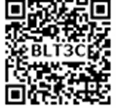
To understand the concept of perimeter and area of closed shapes.
To calculate the perimeter and area of square, rectangle, right angled triangle and their combined shapes.
To understand the usage of units appropriately for area and perimeter.
We come across many situations in our day to day life which deal with shapes, their boundaries and surfaces.
For example,
A fence built around a land.
Frame of a photograph.
Calculating the surface of the wall to know the quantity of the paint required.
Wrapping the textbooks and notebooks with brown sheets.
Calculating the number of tiles to be laid on the floor.
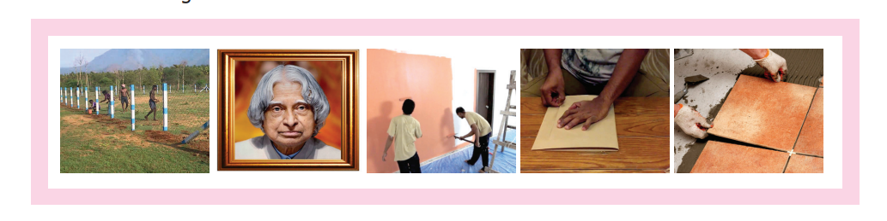
Some situations need to be handled tactfully and efficiently for the following reasons.
Using the optimum space to build a dining hall, kitchen, bedroom etcetera. in constructing a house in the available land and planning of materials required.
Arranging the things like cot, television, cupboard, table etcetera., in the proper place within the available space at home.
Reducing the expenses in all the above activities.
In this context, learning of perimeter and area will be of great importance,
Think about the situation
Apoorva and her brother return from school. Their mother serves them some biscuits. While they eat them one by one, Apoorva arranges the biscuits on a tray. She finds that the tray can hold only 12 biscuits. If she has to extend spreading the remaining biscuits also in the same manner, she will need a bigger tray in size because, already 12 biscuits occupied the surface of the tray completely. The total length of the visible borders of the tray is said to be the perimeter and the surface occupied by the biscuits is said to be the area of the tray. Let us discuss about the perimeter and area in detail in this chapter.
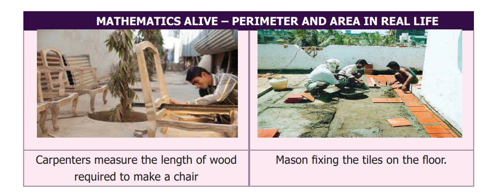

Activity
Observe the following shapes and answer the questions given below:
![image, The first picture shows that a triangle. First three row's first dots, alone are Connected Connected to form, a vertical Side of a triangle. In the third row first three douts are Connected to the base, of ot triangle. In the first row first dot, Second row second dot, and third row third dot, are Connected to form a hypotareous of the triangle, The second picture shows, that a square, In the first row four, five and sixth dot's are connected to form one side of a triangle, In the first row fourth dot, Second row fourth dot, and third row fourth dot, are Connected to form the second side of the square., In the third row, four, five and sixth dots, are Connected together to form the third side of the square. In the first, second and third rows, sixth dots are connected to form the fourth side, of the Square, The third picture represents an angle, In the first row, nineth dot, Second row eighth dot, and in the third row seventh dots, are Connected to form the one first arm, of the angle. In the third row Seventh, eighth and nineth dots, are Connected to form the second arm, of the angle. The fourth picture, belongs to the quadritateral family, In the first row twelve and thirteenth dots, are connected by a line. In the first row twelvth dot, in second row eleventh dot, and in the third row tenth dots, are Connected by a line. and third rows tenth eleventh, twelth,and thirteenth dots are Connected by a line, Again first row, second, and third rows, thirteenth dots, are connected by a line, which gives a Closed The fifth picture shows, that the open figure, In the first row fourteenth, fifteenth and Sixteenth dots, are Connected with a line, again in the first row, fourteenth dot, second, and third, row also fourteenth dots, are Connected by a vertical line, In the third row fourteenth. fifteenth and dots are Connected by a line again in the third row sixteenth, Second row leventh, and in the first row eighteenth dots, are Connected by a line, which gives a open figure. The Sixth picture shows, that the rectangle. In the first row nineteenth, twentyth and twenty first dots, are Connected by a line, Again in the first, second, third and fourth row nineteenth dots, are vertically Connected by a line, again in the fourth row nineteenth. twenty and twenty first dots are connected by a horizontal line, again in the first, second, third and fourth row twenty first dots are connected by Line which gives a rectangle. 9 to The Seventh picture represents, the closed figure, In the fourth row, third point, fifth row fourth point, sixth row fifth points, are Connected by a lime, In the Sixth row and the Seventh row, fifth points are Connected by a line, In the Seventh row, first five points, are Connected by a horizontal line, in the Sixth and seventh row, first points are connected.by a line again fouth row. third point, fifth row second point and Sixth row first point Connected by a line which gives a closed figure. The eighth picture shows that the isosceles triangle. In the fifth row eighth point, Sixth row nineth point and seventh row tenth points are Connected by a line In the seventh row six seven, eight nine and tenth points are Connected by a line horizontally. in the fifth row eighth point, Sixth row seventh print and seventh row sixth paint's are Connecte by a line which gives isosceles trangle, The ninth picture represents the figure, T. In the fifth row eleventh point twelve, thirteen and fourteenth points, are connected by a line. In the fifth and Sixth row, fourteenth points are connected by a line, in the sixth row thirteen id fourteenth points are Connected by a line In the sixth and Seventh row thirteen pants are Connected by a line, In the seventh row twelvth and thirteenth points are Connected by a line, in the sixth and seventh row the twelvth points are Connected by a line, in the sixth row eleventh and twelvth points are connected by a line in the fifth and sixth row eleventh points are Connected by a line, which gives a closed figute shaped, T. The tenth picture represents the closed figure. In the fourth row fifteenth and sixteenth dots are Connected by a line, in the fourth, fifth and Sixth rows sixteenth points are Connected in the sixth row fifteenth and Sixteenth points are Connected, in the fourth, and sixth rows Seventeenth points are Connected by a ine, in the fourth row seventeenth and eighteenth points are Connected, in the four, five, six and seventh row eighteenth points are Connected, in the seventh row fifteen, Sixteen seventeen and eighteenth points Connected horizontally by a line, in four, five, six and seventh row's fifteenth points are Connected finally in the fourth row fifteenth and sixteenth points are Connected, which gives a closed figure. The eleventh pictiore, represents open figure where fifth, sixth and seventh row nineteenth points, are connected and in seventh row nineteen twenty and twenty one points by a line again five, six, Seven rows. twenty first points are connected, which gives a Open figure,](images/image121.png)
1) Mark the closed shapes as tick, mark ’ and open shapes as x,
2) Find the measure of the boundary of closed shapes by using a ruler.
3) Which closed shape has the shortest boundary?
4) Which closed shape has the longest boundary?
The length of the boundary of any closed shape is called its perimeter. Hence, ‘the measure around’ of a closed shape is called its perimeter. The unit of perimeter is the unit of length itself. The units of length may be expressed in terms of metre, millimetre, centimetre, kilometre, inch, feet, yard etcetera.,
The word perimeter is derived from the Greek words ‘peri’ and ‘metron’, where ‘peri’ means ‘around’ and ‘metron’ means ‘measure
3 point 2 point 1 Perimeter of a Rectangle
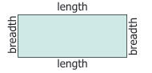
Perimeter of a rectangle is equal to Total boundary of the rectangle
is equal to length plus breadth plus length plus breadth
is equal to 2 length plus 2 breadth
is equal to 2 open bracket length plus breadth close bracket
Let us denote the length, breadth and the perimeter of a rectangle as l, b and P respectively. Perimeter of the rectangle, P is equal to 2 into open bracket l plus b close bracket units

Note
In a rectangle the opposite sides are equal in length.
For the pathway shown in the figure, the outer boundary of the pathway is P Q R S and its inner boundary is A B C D
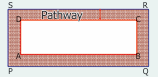
Example 1
If the length of a rectangle is twelve centimeter and the breadth is ten centimeter , then find its perimeter.
Solution
l, is equal to twelve centi meter
b is equal to ten centi meter
P is equal to 2 open bracket l plus b close bracket units
is equal to 2 open bracket twelve plus ten close bracket,
is equal to 2 into 22
is equal to 44 cm Perimeter of the rectangle is 44 centi meter.
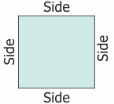
Perimeter of a square is equal to Total boundary of the square.
is equal to side plus side plus side plus side.
is equal to open bracket 4 into side close bracket units
If the side of a square is ‘s’ units, then.
Perimeter of the square, P, is equal to open bracket 4 into s close bracket units is equal to 4s units.
Note
In a square, all the sides are equal in length.
The perimeter of a regular shape with any number of sides is equal to number of sides into length of a side,
Example 2
The side of a square is 5 centi meter. Find its perimeter.
Solution,
S, is equal to 5 centi meter
P, is equal to open bracket, 4 into, s, close bracket, units
is equal to 4 into 5
is equal to 20 centimeter
Perimeter of the square is 20 centi meter.
Perimeter of a triangle is equal to Total boundary of the triangle
is equal to, side 1, plus, side 2, plus, side 3 .
If three sides of a triangle are taken as a, b and c, then the Perimeter of the triangle, P, is equal to open bracket a, plus b, plus c, close bracket units.
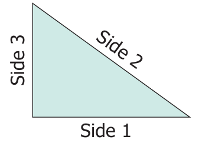
Example 3
Find the perimeter of a triangle whose sides are 3 centimeter, 4 centimeter and 5 centimeter.
Solution
a is equal to 3 centimeter
b is equal to 4 centimeter
c is equal to 5 centimeter
P is equal to open bracket a, plus b, plus c close bracket units
is equal to 3 plus 4 plus 5 is equal to twelve centimeter
Perimeter of the triangle is twelve centi meter.
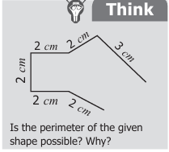
Is the perimeter of the given shape possible? Why?

Try these
1) Draw a shape with perimeter 16 centimeter in a dot sheet.
2) What is the perimeter of a rectangle if the length is twice its breadth?
3) What would be the perimeter of a square if its side is reduced to half?
4) What is the perimeter of a triangle if all sides are equal in length?
Activity
Choose any five items like Table, A4 sheet, Note book., etcetera in the classroom. Guess the approximate length of each side by observation and write down the estimated perimeter of the item. Then, measure by using ruler and record the actual perimeter and find the difference in the following table (to the nearest centimeter).
Item |
Estimated Perimeter |
Actual Perimeter |
Difference |
Item, Remaining below 4 cell, are Mt, |
Estimated Perimeter, Remaining below 4 cell, are Mt, |
Actual Perimeter, Remaining below 4 cell are Mt,, |
Difference, Remaining below 4 cell are Mt, |
|
|
|
|
|
|
|
|
|
|
|
|
Example 4
Find the length of the rectangular black board whose perimeter is 6 meter and the breadth is 1 meter .
Solution
Perimeter of the black board, P is equal to 6 meter Breadth of the black board, b is equal to 1 meter length, l, is equal to ?
2 open bracket l plus b close bracket is equal to 6
2 open bracket l plus 1 close bracket is equal to 6
l plus 1 is equal to 6 divided by 2
is equal to 3
l, is equal to 3 minus 1
is equal to 2 meter
The length of the black board is 2 meter.
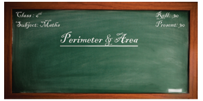
Example 5
Find the side of a square shaped postal stamp of perimeter 8 centimeter.
Solution Perimeter of the square, P, is equal to 8 centimeter
4 into S is equal to 8
S is equal to 8 divided by 4
is equal to 2 centimeter
The side of the stamp is 2 centimeter.
Example 6
Find the side of the equilateral triangle of perimeter, hundred and twenty nine, centimetre.
Solution
Perimeter of the equilateral triangle, P is equal to, one hundred and twenty nine, centimeter
a, plus a, plus a, is equal to one hundred and twenty nine,
3 into a, is equal to one hundred and twenty nine,
a, is equal to one hundred and twenty nine, divided by 3
is equal to 43 centimeter
The side of the equilateral triangle is 43 centimeter.
Example 7
Thendral, Tharani and Thanam are given a thread piece each of length 12 centimeter. They are asked to make a rectangle, a square and a triangle respectively with the thread for their Math activity. In how many ways, can they make the respective shapes?
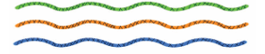
Solution
Thendral
Perimeter of the rectangle, P is equal to twelve centimeter
2 open bracket l plus b close bracket is equal to 12
l plus b is equal to 12 divided by 2 is equal to 6 centimeter
The possible pairs of measures whose sum is
6 are open bracket 5, comma 1 close bracket and open bracket 4, 2 close bracket.
Hence, Thendral can make a rectangle in 2 ways. She can make a rectangle of length 5 centimeter and breadth 1 centimeter and another one with length 4 centimeter and breadth 2 centimeter.
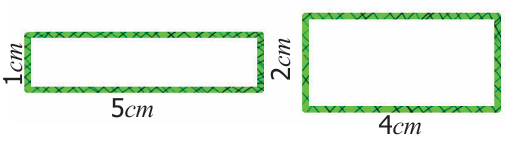
Tharani
Perimeter of the square, P is equal to twelve centimeter
4 into s is equal to twelve
s is equal to twelve divided by 4 is equal to 3 centimeter
Hence, Tharani can make only one square of side 3 centimeter.
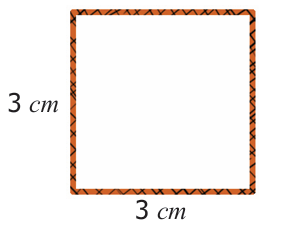
Thanam
Perimeter of the triangle, P, is equal to twelve centimetre
a, plus b plus c is equal to twelve centimetre
The possible triplets of measures whose sum is twelve and also satisfying the triangle inequality are open bracket 2, 5, 5 close bracket, open bracket 3, 4, 5 close bracket open bracket 4, 4, 4 close bracket. Hence, Thanam can make 3 triangles of sides 2 centimetre r, 5 centimetre and 5 centimetre;
3 centimetre, 4 centimetre and 5 centimetre and 4 centimetre, 4 centimetre and 4 centimetre.
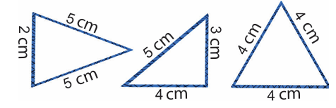

Think
Can different shapes have the same peri meter?
Example 8
Find the cost of fencing a square plot of side twelve meter at the rate of Rupees 15 per meter,
Solution
Side of a square plot is equal to twelve meter
Perimeter of the square plot is equal to open bracket 4 into s, close bracket units
is equal to 4 into twelve is equal to 48 meter,
Cost of fencing the plot at the rate of Rupees 15 per meter is equal to 48 into 15 is equal to Rupees seven hundred and twenty,
Try these
1) Find the breadth of the rectangle with perimeter 14 meter and length 4 meter .
2) The perimeter of an isoseles triangle is 21 centimeter. Find the measure of equal sides given that the third side is 5 centimeter.
Recall the Apoorva and her biscuits arrangement’ in the beginning of this chapter. We do not know the measure of the side of the biscuit. But we know it is in the shape of a square. Let its side be 1 unit. The tray can hold 12 square biscuits (square units). That is, 12 square biscuits (square units) occupy the entire surface of the tray. This space of the tray is called the Area of the tray. Thus, the area of any closed shape is the surface occupied by the number of unit squares within its boundary. Suppose each side of a biscuit is of 1 inch length, then the area of the tray is 12 square inches.
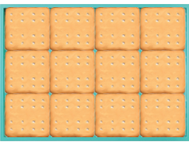
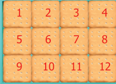
As the above tray is in the shape of a rectangle, split it into small and uniform squares called unit squares. There are 4 unit squares along its length and 3 unit squares along its breadth. Totally, twelve square biscuits occupy this rectangle and so the area of this rectangle is twelve square units.
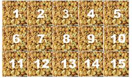
Suresh brought a groundnut burfi packet to school as snacks to eat during the break. As he peeled off the cover, he saw that there are 3 rows and each row has 5 square pieces. What he sees here is that the total number of small squares in the given burfi is 15. So, the area of the given rectangular burfi is 15 square burfi pieces.
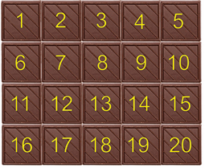
Tamizhazhagi wants to share a chocolate bar with her friends on her birthday. The chocolate bar that she has bought has 5 square pieces horizontally and 4 square pieces vertically. She finds that there are 20 identical unit square chocolate pieces so that she can give it to 19 of her friends and have 1 for herself.
Here, the total number of square chocolate pieces is 20, which represents the area of the whole chocolate bar.
The total number of squares in all these cases can be arrived by multiplying the number of squares along its length with the number of squares along its breadth instead of counting them.
Therefore the area of any rectangle is equal to open bracket length into breadth close bracket square units
is equal to open bracket l into b close bracket square units.
Note
Square units’ can also be written as ‘unit square 2
Try these
Find the number of tiles required to fill the area of following figures.
![image, The first picture has four rows, four Columns of square shaped where as first row, first Cell is filled with green tiles. ,in first, second third and fourth row all the second cells, are filled with green colour tiles, the fourth row third and fourth Cell are filled with green tiles, In the second picture four rows and three Columns in the first row second cell is filled with green tiles, In the Second row first and third cell are filled with green tiles, in the third row second cell alone is filled with green, tiles in the fourth row first, third cell Is filled with green tiles in the third picture. four rows and three Columns where as in the first row first and third cell, are filled with green tiles and in second, third rows. second cell are filled with green tiles, last fourth row first and third cell are green tiles. In the fourth picture, four rows and four Columns, where as in the first row first and fourth cell are filled with green tiles, In the second third row, second and third cell are filled with green tiles, at last fourth row first and fourth Cell are filled with green tiles,](images/image139.png)
Example 9
Find the area of a rectangle of length twelve centi meter centi meter and breadth 7 centi meter.
Solution
Length of the rectangle, l is equal to twelve centi meter .
Breadth of the rectangle, b is equal to 7 centi meter .
Area of the rectangle A is equal to open bracket l, into b close bracket Square units.
is equal to twelve into 7 is equal to 84 Square centi meter.
If the length and breadth of a rectangle are equal, then it becomes a square. Area of the rectangle is equal to open bracket length into breadth close bracket square units.
is equal to open bracket side into side close bracket Square units
is equal to open bracket s into s close bracket Square units.
is equal to Area of a square,
Therefore area of a square is equal to open bracket s into s, close bracket Square units.
Note
When the rectangle is made into a square then length (l) is equal to breadth (b) is equal to side (s)
Example 10
Find the area of a square of side 15 centi meter.
Solution
Side of the square, s is equal to 15 centi meter
Area of the square, A is equal to open bracket s, into s close bracket square. units.
is equal to 15 into 15
is equal to two hundred and twenty five square centi meter. (or) two hundred and twenty five centi meter square
In a right angled triangle one of the sides containing the right angle is treated as its base (b, units) and the other side as its height (h, units)
When a rectangular sheet is cut along its diagonal, two right angled triangles are obtained.
Area of two right angled triangles is equal to Area of the rectangle
2 into Area of a right angled triangle is equal to l, into b
Area of the right angled triangle is equal to 1 divided by 2 into open bracket l into b close bracket square units.
The length and breadth of the rectangle are respectively the base (b) and height (h) of the right angled triangle. Hence, area of the right angled triangle is equal to 1 divided by 2 into open bracket b, into h, close bracket square units.
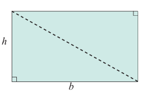
Activity
Mark the base and height of the following right angled triangles.
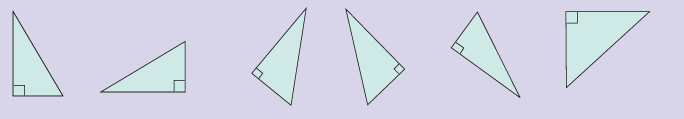
Example 11
Find the area of a right angled triangle whose base is 18 centimeter and height is twelve centimeter.
Solution Base, b is equal to 18 centimeter
Height, h is equal to twelve centimeter
Area, A is equal to 1 divided by 2 into open bracket b, into h, close bracket square units
is equal to 1 divided by 2 into open bracket 18 into twelve close bracket
is equal to, one hundred and eight, square centimeter (or) one hundred and eight, centimeter square
Try these
Draw the following in a graph sheet.
1) Two different rectangles whose areas are 16 centimeter square each.
2) A shape with perimeter 14 centimeter and area twelve square centimeter.
3) A shape with area 36 square centimeter.
4) Form different shapes using 4 unit squares and find their perimeter and area. Open bracket, Sides of the squares must fit exactly close bracket,
A Combined shape is the combination of several closed shapes. The perimeter is calculated by adding all the outer sides Open bracket, boundaries close bracket, of the combined shape. The area is calculated by adding all the areas of closed shapes from which the combined shape is formed
Example twelve
Find the perimeter of the given figure.
Solution
Perimeter is equal to Total length of the boundary
is equal to open bracket 6 plus 2 plus 10 plus 3 plus 2 plus 1 plus 3 plus 4 plus 2 plus 6 plus 9 close bracket centimeter.
is equal to 48 centimeter
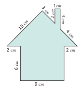
Example 13
Find the perimeter and the area of the following ‘L’ shaped figure.
Solution
Perimeter is equal to open bracket 28 plus 7 plus 21 plus 21 plus 7 plus 28 close bracket centimeter
is equal to one hundred and twelve centimeter.
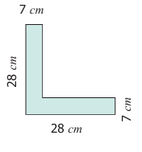
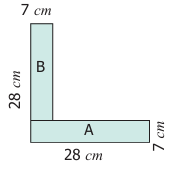
To find the area of the L shaped figure,
it is divided into two rectangles A and B.
Rectangle A |
Rectangle B |
l is equal to 28 centimeter b is equal to 7 centimeter A is equal to l, into b, square centimeter is equal to 28 into 7 is equal to one hundred and ninty six square centimeter. |
l is equal to 21 centimeter b is equal to 7 centimeter A is equal to l, into b, square centimeter. is equal to 21 into 7 is equal to one hundred and forty seven square centimeter. |
The area of the L, shaped figure is equal to open bracket one hundred and ninety six, plus, one hundred and forty seven, close bracket square centimeter.
is equal to three hundred and forty three, square centimeter.
Activity
Find the area of the given L, shaped rectangular figure by dividing it into squares of equal sizes.
Think
Can you find the area of ‘L’ shaped figure as the difference between two areas
Try these
Measure using ruler and find the perimeter of each of the following diagram.
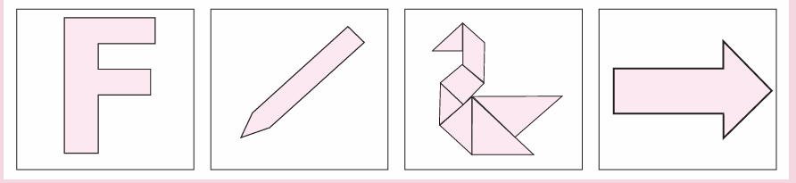
Activity
Form all possible shapes of perimeter 80 centimeter with 9 identical squares, each of side 4 centimeter.
3 point 4 point 1 Impact on Removing slash Adding a portion from slash to a given shape
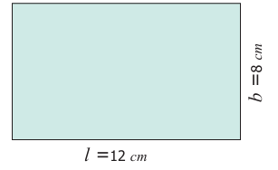
Consider a rectangle of sides 8 centimeter and 12 centimeter.
Length, l is equal to 12 centimeter,
Breadth b, is equal to 8 centimeter.
Area, A is equal to open bracket l ,into b, close bracket square units.
is equal to 12 into 8
is equal to 96 square centimeter.
Perimeter, P, is equal to, 2 ,open bracket l , plus b, close bracket units.
is equal to 2 open bracket 12 plus 8 close bracket
is equal to, 40 centimeter.
Find the area and perimeter of the rectangle in the following situations and observe the changes.
Situation 1
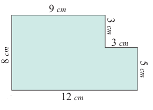
A square of side 3 centimeter is cut at a corner of the rectangle.
Area, A is equal to open bracket l, into b close bracket minus open bracket, s, into, s, close bracket square units.
is equal to open bracket 12 into 8 close bracket minus open bracket 3 into 3 close bracket is equal to 87 square centimeter.
Perimeter, P is equal to open bracket Total boundary close bracket units.
is equal to 8 plus 12 plus 5 plus 3 plus 3 plus 9 is equal to 40 centimeter.
The perimeter is not changed. But the area is reduced.
Situation 2
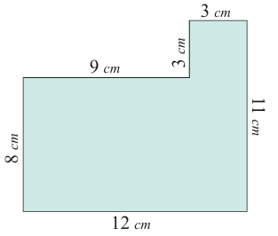
A square of side 3 centimeter is attached to the rectangle.
Area, A is equal to open bracket, l into b close bracket plus open bracket s, into s, close bracket square units.
is equal to open bracket 12 into 8 close bracket plus open bracket 3 into 3 close bracket
is equal to one hundred and five square centimeter.
Perimeter, P, is equal to open bracket Total boundary close bracket units.
is equal to 8 plus 12 plus 11 plus 3 plus 3 plus 9 is equal to 46 centimeter.
Here both the perimeter and the area are increased.
Example 14
Four identical square floor mats of side 15 centimeter are joined together to form either a rectangular mat or a square mat. Which mat will have a larger area and a longer perimeter?
Solution
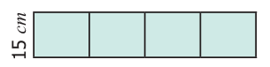
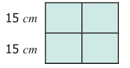
Perimeter of a rectangle, P is equal to 2 open bracket l plus b close bracket units.
is equal to 2 open bracket 60 plus 15 close bracket centimeter. is equal to one hundred and fifty centimeter.
Area of a rectangle, A is equal to open bracket l, into b, close bracket square units.
is equal to 60 into 15 is equal to nine hundred square centimeter.
Perimeter of a square, P is equal to open bracket 4 into s close bracket units
is equal to open bracket 4 into 30 close bracket centimeter is equal to one hundred and twenty centimeter.
Area of a square, A, is equal to open bracket, s, into s, close bracket square units.
is equal to 30 into 30 is equal to nine hundred square centimeter.
There is no change in their areas. But, the rectangular mat will have longer perimeter
Activity
Cut a rectangular sheet along one of its diagonals. Two identical scalene right angled triangles are obtained. Join them along their sides of identical length in all possible ways. Six different shapes can be obtained. Four of them are given. Find the remaining two shapes. Find the perimeter of all the six shapes and fill in the table.
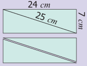
Serial Number |
Shape obtained |
Perimeter |
1) |
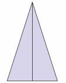 |
M T cell |
2) |
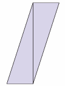 |
M T cell |
3) |
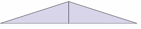 |
M T cell |
4) |
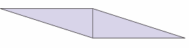 |
M T cell |
5 |
M t cell |
M T cell |
6 |
M t cell |
M T cell |
Based on the above activity answer the following questions
1) Are the perimeters same for all the shapes?
2) Which shape has the longest perimeter?
3) Which shape has the shortest perimeter?
4) Are the areas of all the shapes same? Why?
Shapes with the same perimeter may have different areas.
Shapes with the same area may have different perimeters
The area of the shapes like triangle, square etcetera. are found by standard formulae. But we can find the approximate area of shapes like leaves as follows.
Place a leaf on a graph sheet and trace its boundary. Now observe the squares of size 1 centimetre into 1 centimeter inside of this boundary. Colour the complete squares in Green, the partial but bigger than half squares in Orange and the half squares in Blue. Leave the smaller than half squares which have negligible area. Now the approximate area of the leaf
Is equal to Number of full squares plus Number of more than half squares
Plus 1 divided by 2 into Number of half squares, square units
Is equal to open bracket 14 plus 6 plus 1 divided by 2 into 2 close bracket square centimeter.
Is equal to 21 square centimeter.
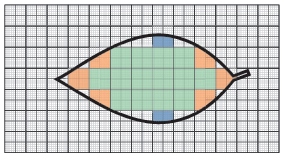
Note
You will learn to find the actual area of irregular shapes like leaves in your higher classes.
Try these
Find the approximate area of the following figures
![image, (1) The first picture represent,the trace of two curves it and mouth facing opposite side placed at some seperation with its both ends joining irregularly with a Iine. (2) The second picture, Shows that the trace of Crescent on a graph sheet. (3) The third picture represent, the trace of a the Square, whose comers are taken out in and the Shape of one by fourth part of Small Circles, (4) The fourth picture, represent a trace of a square whose right side, is taken out in the Shape of crescent moon and also this taken out part is placed, at the left side of the cutted part.](images/image161.png)
Consider a square of side 1 centimeter. Therefore, its area is 1 square. centimeter open bracket of 1 centimeter square close centimeter. Divide one of its sides into 10 equal parts. One such part is equal to 1 millimeter . We know that 1 centimeter is equal to 10 millimeter. That is a square of side 1 centimeter is made up of hundred small squares with 1 millimeter square area each. Therefore, the side of this square is 10 millimeter and the area of this square is equal to side into side is equal to 10 millimeter into 10 millimeter is equal to hundred square. Milli meter open bracket of hundred millimeter square close bracket. Therefore, the area of a square with 1 centimeter side is 1 centimeter square is equal to hundred millimeter square.
Similarly, the other conversions can also be done. For example,
1) 1 centimeter square is equal to 10 millimeter into 10 millimeter
is equal to one hundred millimeter square
2) 1 meter square is equal to one hundred centimeter into one hundred centimeter
is equal to ten thousand centimeter square
3) 1 kilo meter square is equal to one thousand meter into one thousand meter
is equal to ten lax meter square
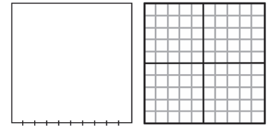
Example 15
Fill in the blanks.
1) 2 centimeter square is equal to desh millimeter square
2) 18 meter square is equal to desh centimeter square
3) 5 kilo meter square is equal to desh meter square
Solution
1) 2 centimeter square is equal to 2 into one hundred is equal to two hundred millimeter square
2) 18 meter square is equal to 18 into ten thousand is equal to, one lakh eighty thousand , centimeter square
3) 5 kilo meter square is equal to 5 into ten lakh is equal to fifty lakh meter square
1 acre is equal to, four thousand forty six eight six meter square.
1 hectare is equal to ten thousand meter square.
Try these
Fill in the blanks
1) 7 centimeter square is equal to desh millimeter square
2) 10 meter square is equal to desh centimeter square
3) 3 kilo meter square is equal to desh meter square

Perimeter and Area
Expected Outcome
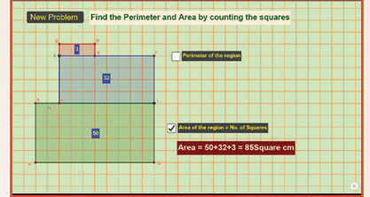
Step 1 Open the Browser by typing the URL Link given below (or) Scan the QR Code. GeoGebra work sheet named “Perimeter and Area” will open. There is a worksheet under the title Counting by squares.
Step 2 Click on New Problem and find the perimeter and Area of the shape by counting along the squares. Click on the respective check boxes to check your answer
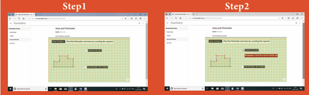
Browse in the link: Perimeter and Area: https://ggbm.at/dxv8xvhr or Scan the QR Code.
1) The table given below contains some measures of the rectangle. Find the unknown values.
Serial number |
Length |
Breadth |
Perimeter |
Area |
1) |
Length 5 centimeter |
Breadth, 8 centimeter |
Perimeter, Question mark |
Area, Question mark |
2) |
Length, 13 centimeter |
Question mark |
Perimeter, 54 centimeter |
Area, Question mark |
3) |
Question mark |
Breadth , 15 centimeter |
Perimeter ,60 centimeter |
Area, Question mark |
4 |
Length, 10 meter |
Breadth, Question mark |
Perimeter Question mark |
Area, One hundred and twenty, square meter |
5) |
Length, desh |
Breadth, 4 feet |
Perimeter ,Question mark |
Area, 20 square feet |
2) The table given below contains some measures of the square. Find the unknown values.
Serial Number |
Side |
Perimeter |
Area |
1) |
Side 6, centimeter |
Perimeter, Question mark |
Area, Question mark |
2) |
Side,Question mark |
Perimeter,one hundred, meter |
Area, Question mark |
3) |
Side,Question mark |
Perimeter, Question mark |
Area, 49 square feet |
3) The table given below contains some measures of the right angled triangle. Find the unknown values.
Serial Number |
Base |
Height |
Area |
1) |
Base, 20 centimeter |
Height,40 centimeter |
Area, Question mark |
2) |
Base, 5 feet |
Height, Question mark |
Area ,20 square. feet |
3) |
Base, Question mark |
Height, 12 meter |
Area, 24 square Meter |
4) The table given below contains some measures of the triangle. Find the unknown values.
Serial Number |
Side 1 |
Side 2 |
Side 3 |
Perimeter |
1) |
Side 1, 6 centimeter |
Side 2,5 centimeter |
Side 3,2 centimeter |
Perimeter, Question mark |
2) |
Side 1, Question mark |
Side 2,8 meter |
Side 3,3 meter |
Perimeter, 17 meter |
3) |
Side 1, 11 feet |
Side 2, Question mark |
Side 3, 9 feet |
Perimeter, 28 feet |
1) 5 centimeter square is equal to desh millimeter square
2) 26 meter square is equal to desh centimeter square
3) 8 kilo meter square is equal to desh meter square
6) Find the perimeter and area of the following shapes.
![image, There are three pictures given below as, follows: (1) The first picture represents a twelve centimeter square from which four centimeter Square, is taken out from each corner. Now, the remaining part of the picture is in green colour written by four centimeter in each sides, (2) The second picture represent a square in a middle part with three centimetre and each side of square has right angled, triangle with base centimeter, height four centimetre, and hypotaneous five centimeter, it looks like a demo windmill The length of the sides are written in above manner. Also it is green in Colour, (3) The third picture has a rectangle of length fifty centimeter, breadth five centimeter is placed, at the top side of its length's left corner, Side with ten centimeter square is placed, also the right side of its breadth on de right angled triangle placed with breadth as a base height as twelve centimeter and hypotaneous as thir beeer centimeter. In this left side length is written as fifteen centimeter and others are written in above manner. Also it is green in Colour,](images/image167.png)
7) Find the perimeter and the area of the rectangle whose length is 6 meter and breadth is 4 meter.
8) Find the perimeter and the area of the square whose side is 8 centimeter.
9) Find the perimeter and the area of a right angled triangle whose sides are 6 feet, 8 feet and 10 feet.
10) Find the perimeter of
1) A scalene triangle with sides 7 meter, 8 meter, 10 meter.
2) An isosceles triangle with equal sides 10 centimeter each and third side is 7 centimeter.
3) An equilateral triangle with side 6 centimeter.
11) The area of a rectangular shaped photo is 820 square. centimeter. and its width is 20 centimeter. What is its length? Also find its perimeter.
12) A square park has 40 meter as its perimeter. What is the length of its side? Also find its area.
13) The scalene triangle has 40 centimeter as its perimeter and whose two sides are 13 centimeter and 15 centimeter, find the third side.
14) A field is in the shape of a right angled triangle whose base is 25 meter and height 20 meter. Find the cost of levelling the field at the rate of Rupees. 45 per square. meter square.
15) A square of side 2 centimeter is joined with a rectangle of length 15 centimeter and breadth 10 centimeter. Find the perimeter of the combined shape.
16) The following figures are of equal area. Which figure has the least perimeter?
![image, There are four images given below to find the Least perimeter: (a) In this picture there is five square blocks arranged as three squares are placed at horizontally, at the right side below the last block two square blocks are placed vertically. It's looks like I verted 'L' Shape in pink Colour. (b) In this picture two Square blocks are placed at vertically, at joined to that three square blocks are placed Vertically also Coloured in pink. (c) In this picture five Square blocks are placed like T'shaped where as in the middle three square blocks placed vertically and also Coloured in pink. (d) In this picture one square is placed at middle and each side of the square are placed also it is coloured in pink](images/image168.png)
17) If two identical rectangles of perimeter 30 cm are joined together, then the perimeter of the new shape will be
a) equal to 60 centimeter
b) less than 60 centimeter
c) greater than 60 centimeter
d) equal to 45 centimeter
18) If every side of a rectangle is doubled, then its area becomes desh times.
a) 2
b) 3
c) 4
d) 6
19) The side of a square is 10 centimeter. If its side is tripled, then by how many times will its perimeter increase?
a) 2 times
b) 4 times
c) 6 times
d) 3 times
20) The length and breadth of a rectangular sheet of a paper are 15 centimeter and 12 centimeter respectively. A rectangular piece is cut from one of its corners. Which of the following statement is correct for the remaining sheet?
a) Perimeter remains the same but the area changes
b) Area remains the same but the perimeter changes
c) There will be a change in both area and perimeter.
d) Both the area and perimeter remains the same.
Miscellaneous Practice Problems
1) A piece of wire is 36 centimeter long. What will be the length of each side if we form
1) a square
2) an equilateral triangle.
2) From one vertex of an equilateral triangle with side 40 centimeter, an equilateral triangle with 6 centimeter side is removed. What is the perimeter of the remaining portion?
3) Rahim and Peter go for a morning walk, Rahim walks around a square path of side 50 meter and Peter walks around a rectangular path with length 40 meter and breadth 30 meter. If both of them walk 2 rounds each, who covers more distance and by how much?
4) The length of a rectangular park is 14 meter more than its breadth. If the perimeter of the park is 200 meter, what is its length? Find the area of the park.
5) Your garden is in the shape of a square of side 5 meter. Each side is to be fenced with 2 rows of wire. Find how much amount is needed to fence the garden at Rupees 10 per meter.
Challenge Problems
6) A closed shape has 20 equal sides and one of its sides is 3 centimeter. Find its perimeter.
7) A rectangle has length 40 centimeter and breadth 20 centimeter. How many squares with side 10 centimeter can be formed from it.
8)The length of a rectangle is three times its breadth. If its perimeter is 64 centimeter, find the sides of rectangle.
9) How many different rectangles can be made with a 48 centimeter long string? Find the possible pairs of length and breadth of the rectangles.
10) Draw a square B whose side is twice of the square A. Calculate the perimeters of the squares A and B.
11) What will be the area of a new square formed if the side of a square is made one fourth?
12) Two plots have the same perimeter. One is a square of side 10 meter and another is a rectangle of breadth 8 meter. Which plot has the greater area and by how much?
13) Look at the picture of the house given and find the total area of the shaded portion
![IMAGE, In this image there is a house with different Colour. Where as pink Colour Right angled triangle and Brown Colour Right angled triangle both with height four centimeter is written and Combined together to form a roof of the house. Below the with Side base of the triangle there is a square combined Hangl written as sin centimeter where as base is also One side of that square Coloured in green. Also, there is a blue Colour rectangle with the Length written as nine centimeter and breadth Six centimeter joined right side of the above Square. Atlast, white colour parallelogram joined at the brown Colour right angled triangle's above](images/image169.png)
14) Find the approximate area of the flower in the given square grid.
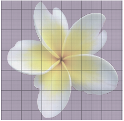
The perimeter of any closed figure is the total length of its boundary.
Perimeter of the rectangle, P is equal to 2 into open bracket l plus b close bracket units.
Perimeter of the square, P is equal to open bracket 4 into s. close bracket units.
Perimeter of the triangle, P is equal to open bracket a plus b, plus c close bracket units.
Perimeter of the shape with equal sides is equal to Number of sides into Length of a side.
The area is the measure of the region slash surface occupied by a closed figure.
Area of a rectangle, A is equal to length into breadth is equal to open bracket l into b close bracket square units.
Area of a square, A is equal to side into side is equal to open bracket s into s close bracket square units.
Area of the right angled triangle, A is equal to 1 divided by 2 open bracket b into h close bracket square units.
The perimeter of a combined shape is the sum of the length of all outer sides of the shapes.
The area of a combined shape is the sum of all the areas of regular slash simpler shapes by which the combined shape is formed